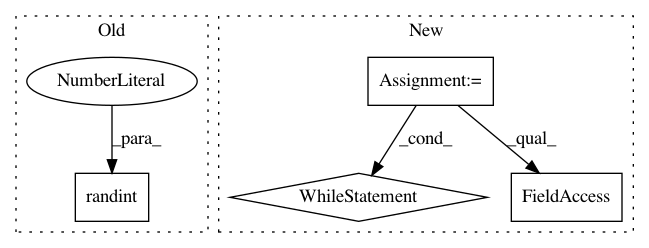

9023806a1dd7097c71aadf77d95020c6fe2c618c,pyemma/coordinates/clustering/tests/test_kmeans.py,TestKmeans,test_3gaussian_1d_singletraj,#TestKmeans#,61
Before Change
err_msg="should yield same centers with fixed seed for strategy %s" % init_strategy, atol=1e-6)
// check a user defined seed
seed = random.randint(0, 2**32-1)
seed = 42312
km1 = cluster_kmeans(X, k=10, init_strategy=init_strategy, fixed_seed=seed, n_jobs=1)
km2 = cluster_kmeans(X, k=10, init_strategy=init_strategy, fixed_seed=seed, n_jobs=1)
self.assertEqual(km1.fixed_seed, km2.fixed_seed)
After Change
k = 50
from pyemma._base.estimator import param_grid
grid = param_grid({"init_strategy": ["uniform", "kmeans++"], "fixed_seed": [True, 463498]})
for param in grid:
init_strategy = param["init_strategy"]
fixed_seed = param["fixed_seed"]
kmeans = cluster_kmeans(X, k=10, init_strategy=init_strategy, n_jobs=1)
cc = kmeans.clustercenters
self.assertTrue(np.all(np.isfinite(cc)), "cluster centers borked for strat %s" % init_strategy)
assert (np.any(cc < 1.0)), "failed for init_strategy=%s" % init_strategy
assert (np.any((cc > -1.0) * (cc < 1.0))), "failed for init_strategy=%s" % init_strategy
assert (np.any(cc > -1.0)), "failed for init_strategy=%s" % init_strategy
km1 = cluster_kmeans(X, k=k, init_strategy=init_strategy, fixed_seed=fixed_seed, n_jobs=0) // serial
km2 = cluster_kmeans(X, k=k, init_strategy=init_strategy, fixed_seed=fixed_seed, n_jobs=2) // parallel
self.assertEqual(len(km1.clustercenters), k)
self.assertEqual(len(km2.clustercenters), k)
self.assertEqual(km1.fixed_seed, km2.fixed_seed)
// check initial centers (after kmeans++, uniform init) are equal.
np.testing.assert_equal(km1.initial_centers_, km2.initial_centers_)
while not km1.converged:
km1.estimate(X=X, clustercenters=km1.clustercenters)
assert km1.converged
while not km2.converged:
km2.estimate(X=X, clustercenters=km2.clustercenters)
assert km2.converged
assert np.linalg.norm(km1.clustercenters - km1.initial_centers_) > 0
np.testing.assert_allclose(km1.clustercenters, km2.clustercenters,
err_msg="should yield same centers with fixed seed=%s for strategy %s, Initial centers=%s"
% (fixed_seed, init_strategy, km2.initial_centers_), atol=1e-6)
def test_negative_seed(self):
ensure negative seeds converted to something positive
km = cluster_kmeans(np.random.random((10, 3)), k=2, fixed_seed=-1)
self.assertGreaterEqual(km.fixed_seed, 0)
In pattern: SUPERPATTERN
Frequency: 3
Non-data size: 4
Instances
Project Name: markovmodel/PyEMMA
Commit Name: 9023806a1dd7097c71aadf77d95020c6fe2c618c
Time: 2017-08-14
Author: m.scherer@fu-berlin.de
File Name: pyemma/coordinates/clustering/tests/test_kmeans.py
Class Name: TestKmeans
Method Name: test_3gaussian_1d_singletraj
Project Name: drckf/paysage
Commit Name: 25694a657492c97276d201a98cff47266060254a
Time: 2016-12-23
Author: charlesfisher@Charless-MacBook-Pro.local
File Name: paysage/layers.py
Class Name: IsingLayer
Method Name: random
Project Name: drckf/paysage
Commit Name: 25694a657492c97276d201a98cff47266060254a
Time: 2016-12-23
Author: charlesfisher@Charless-MacBook-Pro.local
File Name: paysage/layers.py
Class Name: BernoulliLayer
Method Name: random